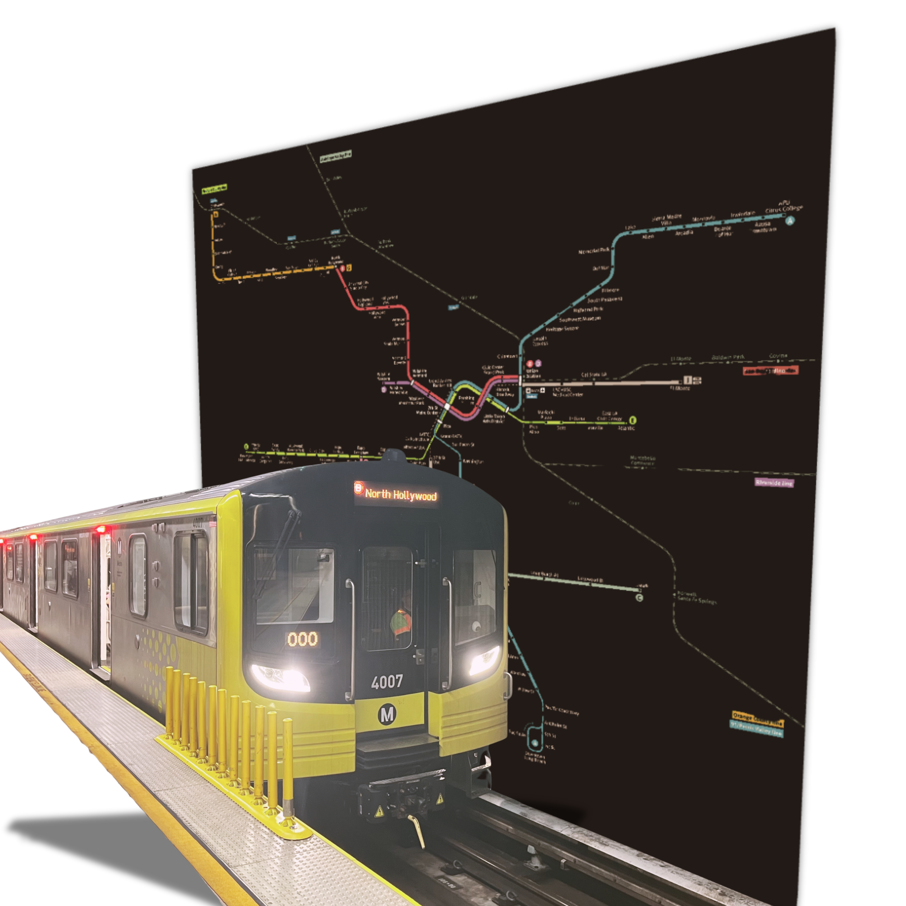

Analyzing how proximity to LA Metro stations relates to neighborhood gentrification risk.

This project maps gentrification pressure across Los Angeles by combining rental, Census, and Metro data to examine whether neighborhoods near rail stations face greater risk.